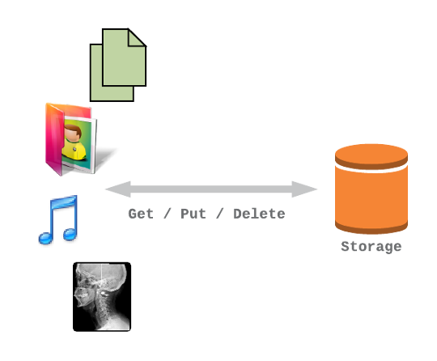
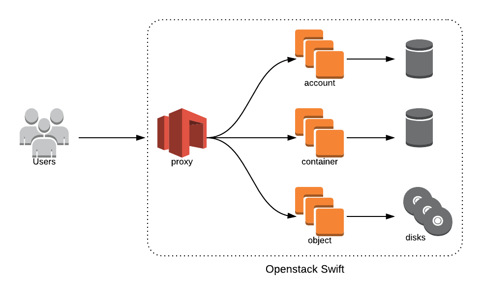

Deploying Swift on a Scale-out File System
Dean Hildebrand
IBM Research
William Owen
IBM
Thiago da Silva
Red Hat
Openstack Swift
A highly available, distributed, eventually consistent object/blob store. Organizations can use Swift to store lots of data efficiently, safely, and cheaply.
Swift Architecture
Swift 2.0 - Storage Policies
Ability to choose how and where to store objects
- How: 2x or 3x replication, EC
- Where: HDs, SSDs or a Scale-out File System
How is this accomplished?

"multiple rings"
Before...
After...
Benefits of Swift on a Scale-out filesystem
Benefits
- Add swift to an existing scale-out file system
- Without having to purchase dedicated storage for object
- A single management plane for both file and object storage
Leverage File System Features
- Snapshots
- Encryption, compression, deduplication
- Automatic tiering between classes of storage
- Tape Integration
problem?
No easy way to access object data from the file system
Example
This object:
http://swift.example.com/v1/acct/cont/obj
Is located here:
/mnt/swift/z1device7/objects/63773/ba2/f91d1e7550cd32822a17b00fa86d9ba2/1414045361.93852.data
Swift-on-File
A Swift DiskFile implementation which allows objects created using the Swift API to be accessed as files on a POSIX filesystem
also allows for files created on file to be access as objects
extending the capabiliti
improve integration of cluster fs to allow multi-protocol
main goal of this project
- Use a scale-out filesystem to store objects (e.g., GlusterFS, GPFS)
- Map URL to file path
Example
Now, this object:
http://swift.example.com/v1/acct/cont/obj
Is located here:
/mnt/swiftonfile/acct/cont/obj
Use Case: Multiple protocol access

edit
Use Case: Analytics
Problem: Separate Storage systems for object ingest/distribution and analysis
- Data duplication and maintenance overhead
- Data Consistency
- Lack real-time analysis
Solution: Swift with Scale-out filesystem
- Decreased time to results
- Run MapReduce directly on objects through native File API
- No waiting for data transfer between storage systems
Use Case: Scientific Collaboration
Problem: Secure and scalable sharing of scientific data
- Native object stores not suited to scientific data analysis
- Scale-out file systems lack global sharing capabilities
- Replicating large scientific datasets problematic
Solution: Swift with Scale-out filesystem
- High-Performance
- Scientific applications use filesystem directly to achieve required bandwidth
- Immediately share results through Swift
- Secure sharing with Keystone
Summary
final summary of what you can do with swiftonfile
Come join us...
Github: https://github.com/stackforge/swiftonfile
Launchpad: https://launchpad.net/swiftonfile
irc: #swiftonfile